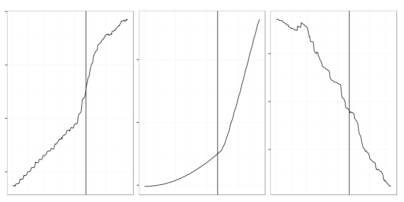
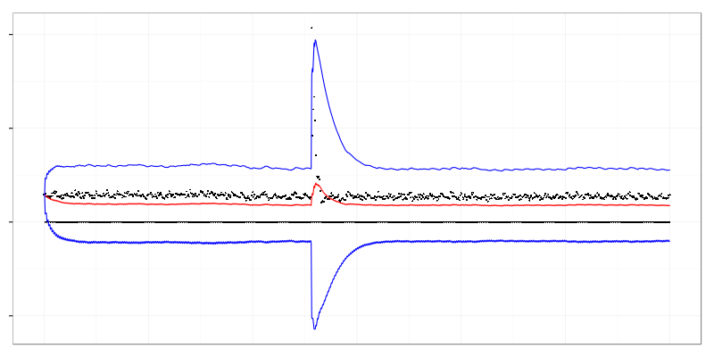

ndiffs: diff until kpss says it's stationary
exponentially-weighted moving average
triple exponential smoothing
Ljung-Box Test
Kolmogorov–Smirnov, Cramér–von Mises
Kolmogorov–Smirnov, Cramér–von Mises
add.smooth <- function(m) {
r <- nrow(m)
ms <- sapply(m, function(y) {
ave(coredata(y),
seq.int(r) %/% max(3, r %/% 150),
FUN=function(x) {mean(x, na.rm=T)})
})
df <- data.frame(index(m)[rep.int(1:r, ncol(m))],
factor(rep(1:ncol(m), each = r), levels = 1:ncol(m)),
as.vector(coredata(m)),
as.vector(coredata(ms)))
names(df) <- c("Index", "Series", "Value", "Smooth")
df
}Anton Lebedevich
mabrek@gmail.com
/
#